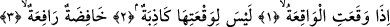
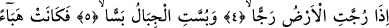
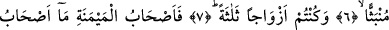
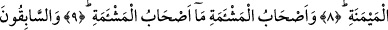
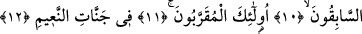

SİZLER DE ÜÇ SINIF
OLDUĞUNUZ ZAMAN
Bismillâhirrahmânirrahîm
1. Kıyâmet koptuğu zaman,
2. Ki onun oluşunu yalanlayacak hiçbir kimse yoktur;
3. O, alçaltıcı, yükselticidir.
4. Yer şiddetle sarsıldığı,
5. Dağlar parçalandığı,
6. Dağılıp toz duman hâline geldiği,
7. Ve sizler de üç sınıf olduğunuz zaman,
8. Sağdakiler, ne mutlu o sağdakilere!
9. Soldakiler, ne bahtsızdırlar onlar!
10. (Hayırda) önde olanlar, (ecirde de) öndedirler.
11. İşte bunlar, (Allah’a) en yakın olanlardır.
12. Naîm cennetlerindedir.
Yâni, kıyâmet kopup gerçekleştiği zaman bu olay sura ikinci kez üfürülmesinde
olacaktır. İşte bu sırada hiç sözle ifâde edilemeyecek çok korkunç olaylar meydana
gelecektir. İsm-i fâil sîğası hâle delâlet ettiği halde Allah Teâlâ kıyâmete el-Vâkıa
ismini verdi, oysa kıyâmet gelecekte gerçekleşecek bir olaydır. Bu ismin verilmesi,
kıyâmetin meydana gelmesi kesin olduğundandır. Bu sebeple “izâ” edâtı ve mâzî sîğası
tercih edilerek kullanıldı. Vâkıa kelimesi, “es-sahha”, “et-tamme “yevmu’l-âzife”
kelimeleri gibi kıyâmetin isimlerindendir.